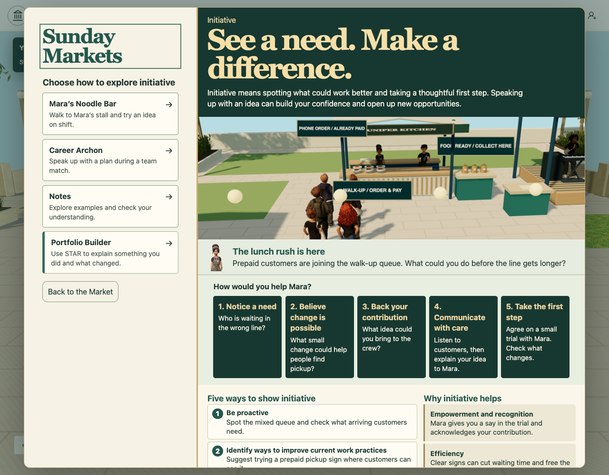

Initiative direct entry — exact source review
CE-CHANGE-20261116-170. Publication authorized 16 November 2026. This record binds the isolated nine-file pacing-word removal. Game deployment is pending; this is a source review.
The public Ready for Initiative lesson-pacing word is removed. Existing account authentication and student-record safeguards are unchanged. The asynchronous compatibility API, input/focus callbacks, mode-request cancellation and duplicate/abort/retry guards remain. The four runtime/cache files, four regression/helper files and runtime manifest are listed below. No entrance redesign168, CI or CEAWA changes are included.
Verification
Source checks, 419 unit tests across 93 files and coverage pass. All 419 staged runtime hashes and 109 reachable imports pass. Desktop1280 and phone390 checks pass fresh and repeated normal entry, campus return/reentry, canvas focus, automatic Market return and existing direct Mara first-gig scene. The latter is a playable scene, not an automatic dialog. All eight focused cases passed across the retained initial/corrected runs. Full local unmodified game checks pass map, Notes feedback/written responses/draft restoration, Journal contextual return, Archon lobby and same-run retention at both widths; guest Notes makes zero Storage/backend calls, with zero page errors or missing responses.
The required CI source/coverage stages pass; its browser stage initially could not start its sandboxed local server. A native isolated browser retry reached the inherited Admin-preview modal/navigation failure: 1 failed, 276 not run, with its runner error retained. No all-CI-green, Safari, physical touch, classroom, signed-in-account or full hosted-match claim. Original failed Mara-dialog expectations and the outdated169recovery source extractor are retained; corrected tests pass without gameplay changes.
Exact source binding
Authoritative base: 9872415519465f18a55bf6ce9ae283056bef89f0, Emmanuel-ICT-Support/GTCEM-Career-Empire main, root Pages. Actual game: https://emmanuel-ict-support.github.io/GTCEM-Career-Empire/playable-3d/ . The Blueprint embedded game is a preview, not deployment proof.
| Reviewed file | Exact Git mode/blob |
|---|---|
playable-3d/app.js | 100644:7f3bf137c3604670df5a0df8058019ef4b51e2df |
playable-3d/classroom-gate.mjs | 100644:efec01533cb86b996eb969ff75a97745227234c7 |
playable-3d/guest-shell.mjs | 100644:a092cc9ff3f8de18c76ac2ca36c3bf4a9dde5e9a |
playable-3d/index.html | 100644:10a2dd0d3493d1ddfc8a13645cf1a6d622a79de4 |
playable-3d/release-manifest.json | 100644:4ae11c2b148afa2b4cb11fa26a7f370a2038c07b |
tests/e2e/classroom-gate.spec.js | 100644:633c4b5add359e3168368ce6963c0d1f43fe31d4 |
tests/e2e/market-controls.js | 100644:27c87ceab062c8c67b6a7a7a7e61796135d22a59 |
tests/unit/classroom-gate.test.mjs | 100644:1dd7cbd709fc9bb166bcd7310299578eca2fe621 |
tests/unit/runtime-recovery.test.mjs | 100644:47374ffc5b74c36b49666a811ff7e06fb3d711b1 |
Local browser evidence

Next
Verify this exact public source review, obtain a genuine nine-file receipt, then guarded game publication and independent live fresh/repeat/return checks. Game deployment and acceptance remain pending. Pending168candidate and staged CIf156c32remain preserved. No real student data was used or backend permission changed.